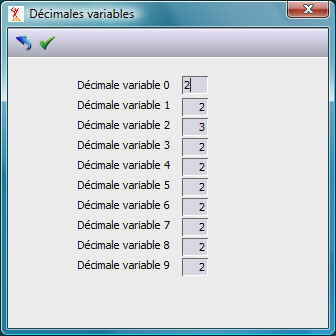

Choix du type de serveur
XLANSQL est prévu pour accéder à divers type de serveurs. Le bouton "Serveur SQL" permet de choisir le fournisseur du serveur. La version actuelle traite les bases Microsoft SQL SERVER et Oracle. Voir les documentations commerciales pour les versions supportées. Ce bouton permet aussi, le cas échéant, de mettre en oeuvre l'Option de connexion Mars.
Choix de la base SQL.
Le bouton « Base SQL » permet de choisir la base SQL. Il est grisé lorsqu’une seule base a été configurée dans la table des serveurs.
Pour chaque base de données, il faut sur le serveur sous le répertoire Harmony un répertoire portant le nom de la base de données avec :
Obligatoirement le fichier paramètre Fhsql.dhfi des fichiers sous SQL. S’il n’existe pas, ce fichier est crée automatiquement à partir du fichier modèle FhsqlDivalto.dhfi.
Les dictionnaires de données des fichiers à transférer sous SQL. (sauf dans le cas où un chemin absolu a été défini dans les paramètres des fichiers).
Les originaux des fichiers à transférer sous SQL.
Mettre à jour la liste des fichiers
Ce bouton de la barre des boutons permet d’ajouter les fichiers susceptibles d’être exploités sous SQL dans le Fhsql.dhfi à partir du modèle FhsqlDivalto.dhfi.. Ce choix ne modifie pas les fichiers existants.
Décimales variables.
Harmony permet de définir des nombres de décimales variables pour les valeurs numériques. Par exemple, dans certains pays les montants s'expriment avec trois décimales, en gestion les quantités peuvent s'exprimer avec 0, 1, 2 ou n décimales selon la nature de l'objet.
Diva peut gérer jusque 10 types de décimales variables. Cette définition s'effectue par classe (10 classes en tout). Pour chaque classe on indique le nombre de décimales pour les nombres de cette classe. Dans le dictionnaire de données, lors de la définition d'un champ de nature "Numérique,D" on indique à quelle classe il appartient.
Le bouton "Décimales" de XPSQL permet de paramétrer le nombre de décimales pour chacune des classes dans la base SQL. Ce paramètre est pris en compte lors de la création des tables dans la base SQL.
Attention
Contrairement au fonctionnement avec un fichier Harmony, le nombre de décimales d'une classe est fixe pour une colonne donnée d'une table et sa valeur doit être connue lors de la création des tables.
